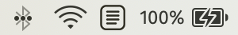

DocDown lives in your menu bar, along the top edge of your screen. Click on its icon to get started.
For help, click the button in the main DocDown window. The button will let you adjust DocDown's settings, and the button exits the app.
Happy converting!